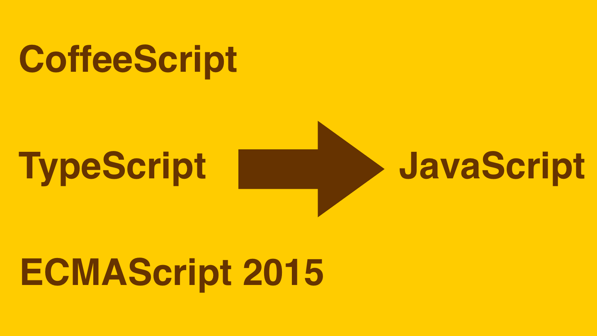

Helps your web developments on iPad or iPhone

Supports multiple languages
Web Transpiler supports ECMAScript 2015, TypeScript, CoffeeScript, and Sass compilation.
A source-to-source compiler for iOS
Web Transpiler supports ECMAScript 2015, TypeScript, CoffeeScript, and Sass compilation.